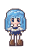
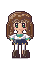
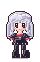
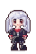

สัดส่วนตามที่วัดจากภาพ
ไม่ได้ลากเส้นตามภาพเกม แต่วัดสัดส่วนจากภาพที่ส่งมาเป็นตัวเลข แล้วปรับตัวละครของเราให้ตรงตามนั้น
พื้น
ขยาย
| ส่วน | ภาพอ้างอิง | ร่างก่อน | ใหม่ |
|---|---|---|---|
| หัว+ผม | ~40% | 43% | ~42% |
| ลำตัว+กระโปรง | ~28% | 36% | ~27% |
| ถุงเท้า/ขา | ~14% | 5% | ~11% |
| บูท | ~19% | 14% | ~17% |
| ระดับตา (ของความสูงหัว) | 70–87% | 53–74% | ~65–82% |
ใหม่
ลำตัวสั้นลง ถุงเท้ายาวขึ้น บูทใหญ่ขึ้น ตาต่ำลง



ร่างก่อน
ไว้เทียบ



ที่ยังต้องเกลา
- ผมยังเป็นทรงหมวกกะลา ต้องแตกเป็นช่อ มีปอยชี้บ้าง
- แขนสั้นลงตามลำตัว ต้องต่อให้มือลงถึงชายกระโปรง
- เงาของเรายังแข็งกว่าในเกม